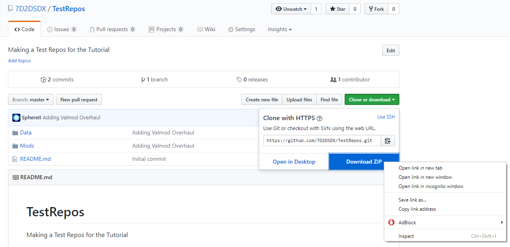

Having your mod hosted on GitHub is great, but how do we let other people use it?
On your GitHub web page, click on the Clone or Download green button, then right click on Download Zip:

You can "Copy Link address", and it will give you a link that looks like: https://github.com/7D2DSDX/TestRepos/archive/master.zip
You can now give that link to your players, and they'll be able to install your mod.
Created with the Personal Edition of HelpNDoc: Easily create PDF Help documents